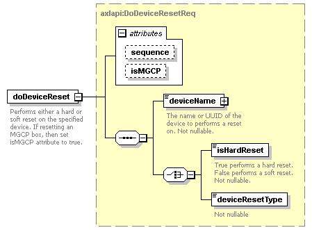

| diagram |  | ||||||||||||||||||
| namespace | http://www.cisco.com/AXL/API/10.5 | ||||||||||||||||||
| type | axlapi:DoDeviceResetReq | ||||||||||||||||||
| properties |
|
||||||||||||||||||
| children | deviceName isHardReset deviceResetType | ||||||||||||||||||
| attributes |
|
||||||||||||||||||
| annotation |
|
||||||||||||||||||
| source | <xsd:element name="doDeviceReset" type="axlapi:DoDeviceResetReq"> <xsd:annotation> <xsd:documentation>Performs either a hard or soft reset on the specified device. If resetting an MGCP box, then set isMGCP attribute to true.</xsd:documentation> </xsd:annotation> </xsd:element> |